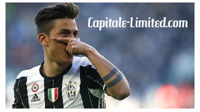
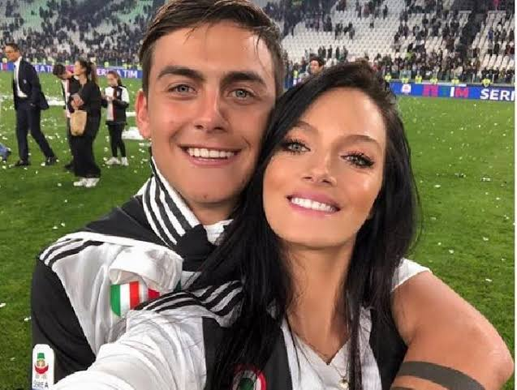
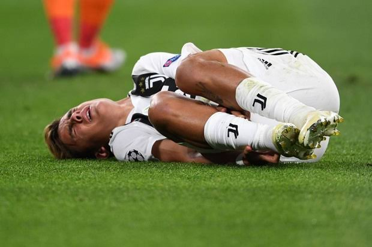
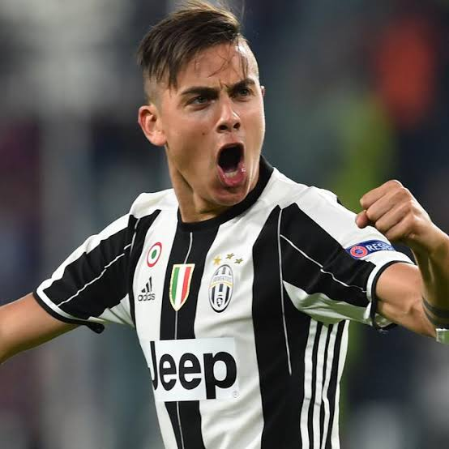

-

Tentang Paulo Dybala
Paulo Bruno Exequiel Dybala lahir pada tanggal 15 November 1993 di Laguna Larga, Cordoba, Argentina. Ia dikenal sebagai salah satu pemain berbakat dengan skill olah bola yang mumpuni.Dybala juga kerap dijuluki La Joya atau permata. Bersama Juventus, Dybala telah meraih gelar Serie A dan Coppa Italia. Ia diprediksi akan menjadi salah satu pemain sepakbola terbaik dalam beberapa tahun ke depan.
-

Hubungan
Saat ini dirinya sedang menjalin hubungan dengan Antonella Cavalieri. Cavalieri merasa kagum dengan Dybala, menurutnya Dybala merupakan sosok yang luar biasa yang mampu memberi dampak besar bagi hidup Cavalieri. Dybala bertemu dengan Cavalieri di sebuah restoran di Argentina. Mereka menjalin hubungan sejak tahun 2015. Saat ini, wanita idaman milik nya itu bekerja sebagai seorang model..
-

Peran Besar Keluarga
Dybala mengatakan, kesuksesannya saat ini tak lepas dari peran besar keluarganya, terutama sang ayah. Karena Dybala sudah meginjak usia dewasa, ia bisa memilih negara mana yang akan ia bela. Dan akhirnya, Dybala lebih memilih Argentina sebagai kewarganegaraan nya.
-

Kisah Masa Kecil
Pemain berkebangsaan Argentina itu juga memiliki kisah masa kecil yang kurang mengenakkan. Ia pernah ditertawakan teman-temannya ketika bercita-cita menjadi pesepakbola terkenal. Saat itu tak ada satu pun teman-teman sepermainannya yang percaya dengan cita-cita Dybala. Saat dirinya menyebut bahwa ia akan menjadi pesepakbola terkenal, semua teman sepermainan nya langsung tertawa terbahak-bahak. Sebagai anak bungsu, Dybala pun kerap merengek kepada orangtuanya untuk dibelikan sepatu bola.
-

Gelar
Dybala menjadi pemain berkelas dengan berbagai gelar prestisius, seperti Serie A, Coppa Italia, SuperCoppa Italia serta masih banyak lagi gelar pribadi yang ia dapat. Performa luar biasa yang ditampilkan nya berhasil membawa dirinya sejajar dengan pemain kelas dunia lainnya.

Ini Adalah Profil Paulo Dybala
Paulo dybala Paulo Bruno Exequiel Dybala lahir pada tanggal 15 November 1993 di Laguna Larga, Cordoba, Argentina.
30 Agustus 2020